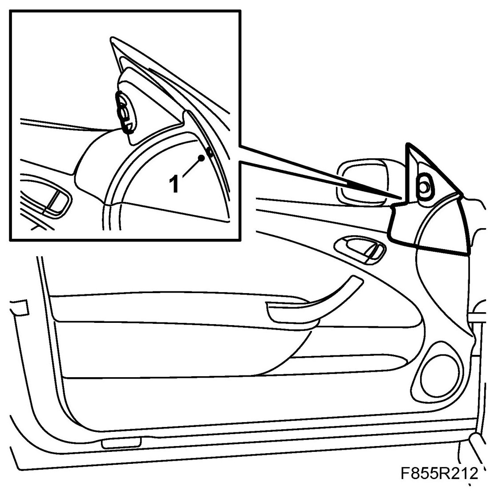
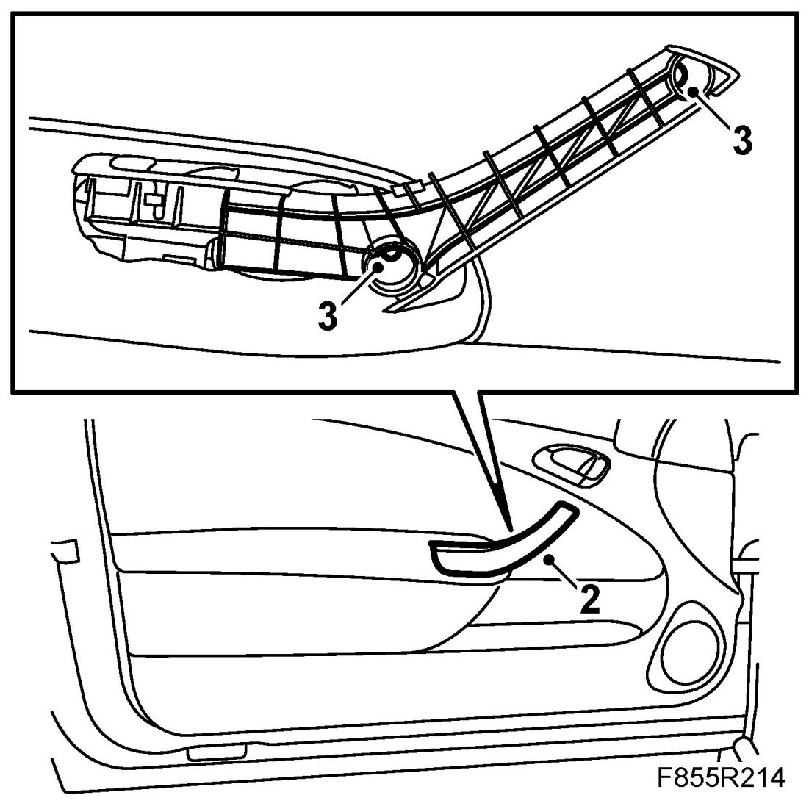
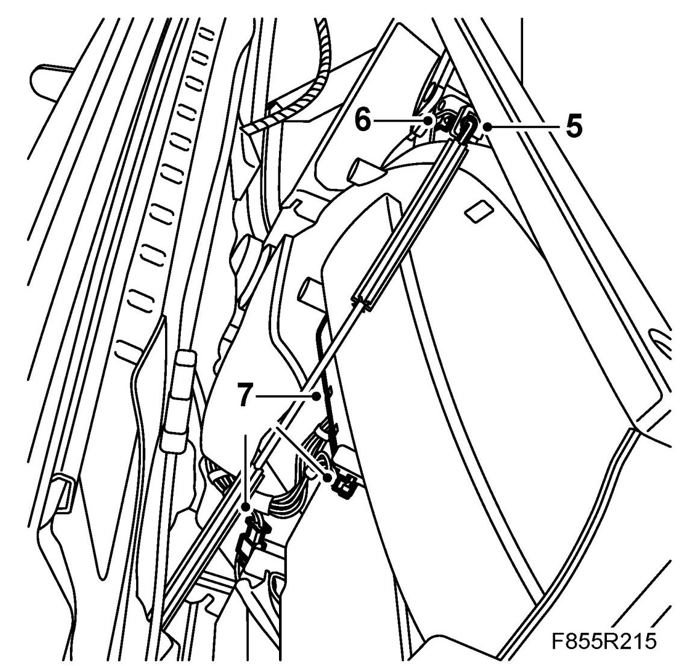
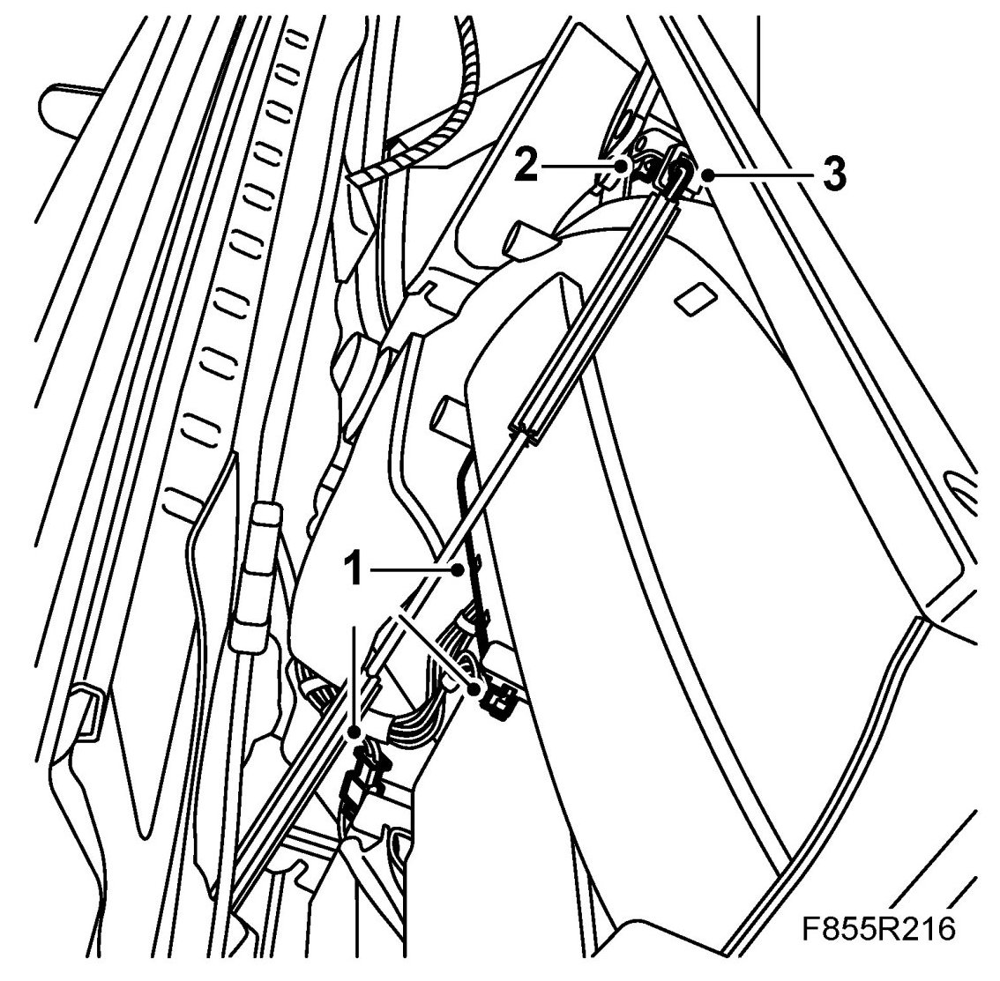
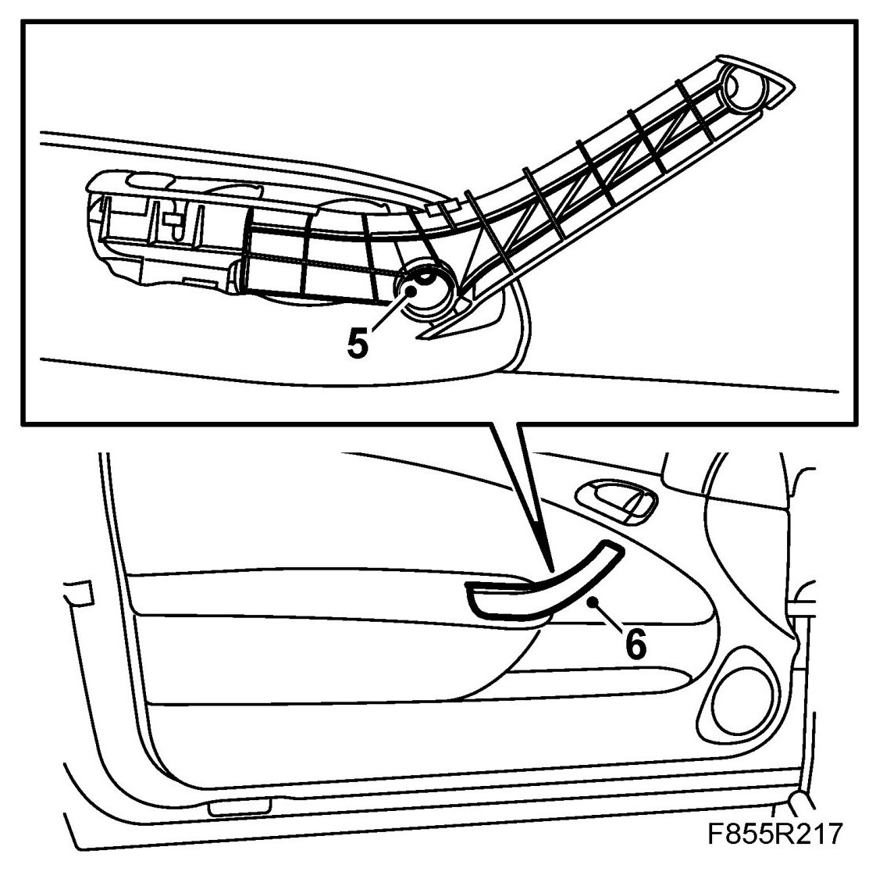
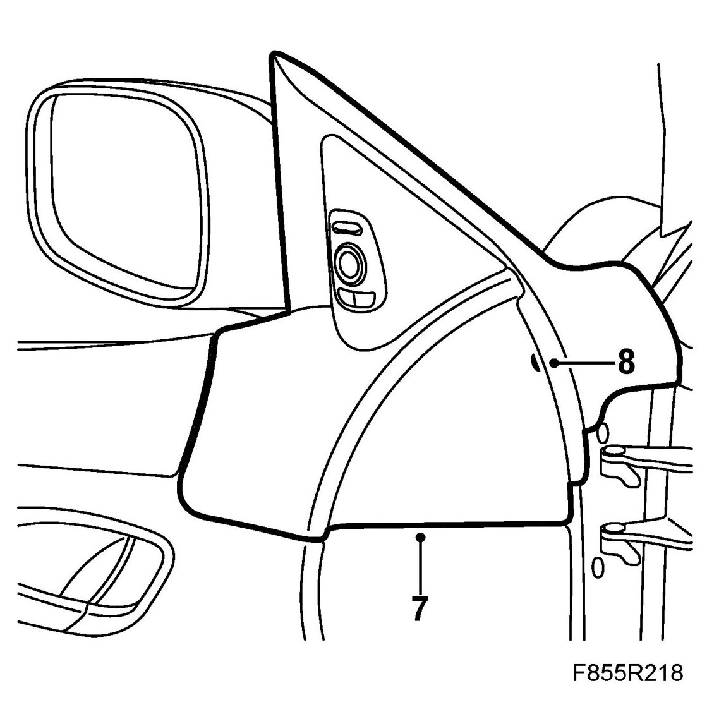

Door Trim, CV
Door Trim, CV
To remove
1. Remove the mirror base cover. Remove the connector.

2. Remove the cover from the door pull. Use 82 93 474 Removal tool.

3. Remove the screws from the handle.
4. Lift the door trim upwards so that the hooks loosen from the door. Use 82 93 474 Removal tool to loosen the guide pin in the rear edge of the trim.
5. Remove the opening handle wire covering from the holder on the door trim.

6. Remove the cable from the opening handle.
IMPORTANT: Take care when releasing the locking mechanism on the connector so as not to damage the connector. Pull the halves straight apart to avoid bending the pins. For further information regarding connectors, refer to Connectors, handling and inspection.
7. Remove the connectors from the door trim and lift away the trim.
To fit
IMPORTANT: Take care when plugging in the connector so as not to damage or press out the pins/sleeves in the connector. For further information regarding connectors, refer to Connectors, handling and inspection.
1. Connect the connectors to the door trim.

2. Fit the wire covering to the opening handle.
3. Fit the opening handle wire covering in the holder on the door trim.
NOTE: Check that the water shields are intact. Broken water shields must be replaced.
4. Engage the door trim hooks in the door's bracket and press down. Make sure that the guide pin is in place.

5. Fit the screws in the door pull.
6. Fit the door pull cover.
7. Connect the switch connector.
8. Fit the mirror base cover.

9. Car with pinch protection: Calibrate the pinch protection